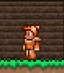
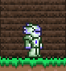
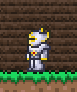
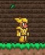
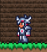
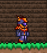
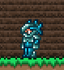
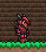
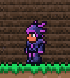
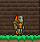

ARMADURAS
Las armaduras son conjuntos de equipamiento (casco, pechera y grebas) que otorgan defensa, bonificaciones y, en muchos casos, habilidades especiales al usar el conjunto completo. Están organizadas por etapas del juego (Pre-Hardmode y Hardmode) y por tipo de daño principal:
- Cuerpo a cuerpo (Melee)
- A distancia (Ranged)
- Mágico (Magic)
- Invocación (Summoner)
- Universal / Soporte
Armaduras Pre-Hardmode (antes del muro de carne)
ARMADURA DE COBRE
Es uno de los conjuntos de armadura más básicos del juego, ideal para principiantes. Se fabrica con placas de cobre, que se obtienen al fundir mineral de cobre en un horno.
- Requisito de fabricación: 30 placas de cobre (equivalente a 60 minerales de cobre).
- Conjunto de piezas:
- Casco de cobre - 3 defensa
- Peto de cobre – 3 defensa
- Grebas de cobre – 3 defensa


ARMADURA DE TUNGSTENO
Es un conjunto de armadura intermedio-baja que aparece en fases tempranas del juego. Solo está disponible en mundos donde el tungsteno reemplaza a la plata como mineral de nivel medio (esto depende de la generación del mundo al crearlo).
- Requisito de fabricación: 60 placas de tungsteno (equivalente a 120 minerales de tungsteno) y forjado en un yunque o yunque de plomo.
- Conjunto de piezas:
- Casco de tungsteno – 7 defensa
- Peto de tungsteno – 9 defensa
- Grebas de tungsteno – 7 defensa
ARMADURA DE PLATA
Es un conjunto de armadura de nivel medio-bajo, adecuado para jugadores que han progresado más allá del cobre y el hierro. Se fabrica con placas de plata, que se obtienen al fundir mineral de plata en un horno.
- Requisito de fabricación: 60 placas de plata (equivalente a 120 minerales de plata) y forjada en un yunque o yunque de plomo.
- Piezas del conjunto:
- Casco de plata – 5 defensa
- Peto de plata – 7 defensa
- Grebas de plata – 5 defensa


ARMADURA DE ORO
Es un conjunto de armadura avanzada en la etapa pre-Hardmode, diseñada para jugadores que ya han progresado más allá de los minerales básicos como el cobre, hierro o plata. Es el equivalente superior al conjunto de plata, y se obtiene al fundir mineral de oro.
- Requisito de fabricación: 60 placas de oro (equivalente a 180 minerales de oro) y forjada en un yunque o yunque de plomo.
- Piezas del conjunto:
- Casco de oro – 8 defensa
- Peto de oro – 10 defensa
- Grebas de oro – 8 defensa
ARMADURA DE PLATINO
Es la contraparte ligeramente superior de la armadura de oro. Aparece en mundos donde el platino reemplaza al oro durante la generación del mundo (al igual que el estaño/cobre o el plomo/hierro). Es una de las mejores armaduras pre-Hardmode para combate cuerpo a cuerpo o defensa general.
- Requisito de fabricación: 60 placas de platino (equivalente a 180 minerales de platino) y forjada en un yunque.
- Piezas del conjunto:
- Casco de platino – 9 defensa
- Peto de platino – 11 defensa
- Grebas de platino – 9 defensa


ARMADURA DE METEORITO
Es un conjunto de armadura de nivel intermedio, especializado en combate a distancia (arqueros). Se fabrica con meteorito, un mineral raro que aparece tras invocar y derrotar al Ojo de Cthulhu (o, en algunos casos, espontáneamente al usar una Lágrima de Cristal).
- Requisito de fabricación: 45 placas de meteorito (90 minerales) y forjado en un yunque.
- Piezas del conjunto:
- Casco de meteorito – 6 defensa
- Peto de meteorito – 8 defensa
- Grebas de meteorito – 6 defensa
ARMADURA DE HELLSTONE
Es un conjunto de armadura avanzado en la etapa pre-Hardmode, diseñado para jugadores que han progresado significativamente en el juego. Se fabrica con hellstone, un mineral que se encuentra en el inframundo (The Underworld) y requiere una forja especial llamada Forja Infernal (Hellforge) para su creación.
- Requisito de fabricación: 60 placas de hellstone (equivalente a 180 minerales de hellstone) y forjada en una Forja Infernal.
- Piezas del conjunto:
- Casco de hellstone – 10 defensa
- Peto de hellstone – 12 defensa
- Grebas de hellstone – 10 defensa


ARMADURA DE CARMESÍ
Es un conjunto de armadura de nivel intermedio que pertenece al bioma Carmesí (Crimson), una de las dos alternativas al bioma Corrupto (la otra es la armadura de escamas de sombra).
- Requisito de fabricación: 20 tejidos carmesí (repartidos en las tres piezas) y forjado en un yunque.
- Piezas del conjunto:
- Casco de carmesí – 6 defensa
- Peto de carmesí – 8 defensa
- Grebas de carmesí – 7 defensa
ARMADURA DE SOMBRAS
Es un conjunto de armadura pre-Hardmode asociado al bioma de la Corrupción. Es la contraparte directa de la armadura de carmesí del bioma Carmesí, y está especialmente diseñada para jugadores que prefieren un estilo de juego ágil y evasivo, ideal para combate cuerpo a cuerpo con énfasis en movilidad.
- Requisito de fabricación: 20 escamas de sombra y forjado en un yunque.
- Piezas del conjunto:
- Casco de sombras – 6 defensa
- Peto de sombras – 8 defensa
- Grebas de sombras – 7 defensa


ARMADURA FUNDIDA
Es la armadura más fuerte disponible en la fase pre-Hardmode, y está especialmente diseñada para combate cuerpo a cuerpo (melee). Se fabrica con ladrillo de piedra fundida y oro o platino, lo que la hace ideal para adentrarse en los desafíos finales antes del Hardmode, como derrotar al Muro de Carne.
- Requisito de fabricación: forjado en un yunque.
- Cada pieza requiere:
- Casco fundido – 10 defensa: 20 ladrillos + 10 placas
- Peto fundido – 12 defensa: 25 ladrillos + 15 placas
- Grebas fundidas –8 defensa: 20 ladrillos + 5 placas